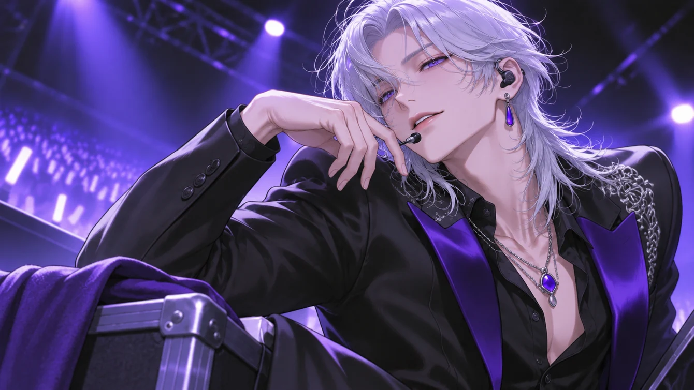
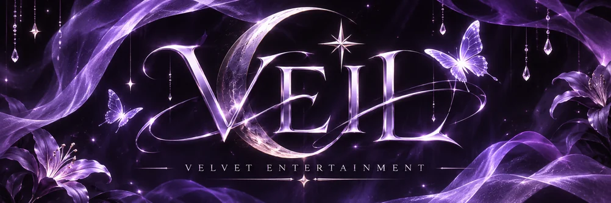

SHIZUKI SHIRAMINE白峰 紫月

Vocalist / Creative Directorコンセプチュアルユニット
音楽と映像で、
PROFILE
歌唱から作詞、
学生時代から音楽と映像を制作し、19歳で自主制作MVが注目を集める。デモ歌唱をきっかけにアーティストとしてデビュー。
現在は楽曲コンセプトやMV、ライブ演出も担当する。
インタビューでは
- 年齢
- 28歳
- 身長
- 184cm
- メンバーカラー
- Amethyst Violet
- 趣味
- 美術館巡り、
香水の調香、 夜の散歩 - 好きなもの
- 雨の日、
紅茶、 ガラス工芸品 - 特技
- 作詞、
映像演出、 色彩構成